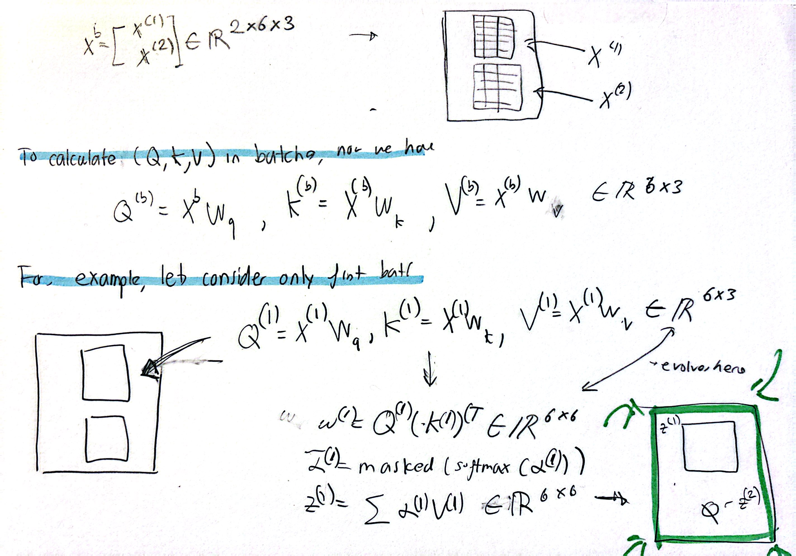

Yesterday, we went over the implementation of weights into the self attention mechanism. We also covered the preliminary idea of masking. The idea of masking evolves into ‘dropouts’, a strategy where a certain ratio of the upper triangular matrix is also masked. It’s supposed to make training better. So, the self attention class evolves to include dropouts.
However, we also need to evolve the self attention mechanism in another respect. Notice that we have only been passing one sentence tensors at a time. In a training sequence we obviously need to evolve that in order to take multiple at a time, most likely, to increase training efficiency and whatnot. The mathematics behind this is pretty important actually. I needed it to even understand what was going on. I make use of the \( \mathbb{R}^{i \times j \times k}\) notation a lot for sanity checks.
Assume we are passing this in — it’s an updated batch with more than once sentence, although for our purposes it’s only the same sentence “our journey starts here” twice over. $$ \begin{bmatrix} 0.43 & 0.15 & 0.89\\ 0.55 & 0.87 & 0.66\\ 0.57 & 0.85 & 0.64\\ 0.22 & 0.58 & 0.33\\ 0.77 & 0.25 & 0.10\\ 0.05 & 0.80 & 0.55\\ \hline 0.43 & 0.15 & 0.89\\ 0.55 & 0.87 & 0.66\\ 0.57 & 0.85 & 0.64\\ 0.22 & 0.58 & 0.33\\ 0.77 & 0.25 & 0.10\\ 0.05 & 0.80 & 0.55 \end{bmatrix} $$
In the below picture, I draw out kinda what it looks like and the special notation to keep track of batches. Like i said before, this really helps out when rewriting the attention classes from scratch because I can keep track of what operations to do. Take a look:

And today, I finished chapter 3-- pretty intense stuff so by no means am I going to rush the marinating process. I need to spend some time with the content, reproducing some basic results. In fact, I don’t think I even implemented the last few classes into the rough build because I wanted to spend a bit more time with them. In my problem set, I’m definitely going to use the notation and try to use the notation alone.
So that being said, because tomorrow I probably won’t post bc I’m not learning anything new, I’m just going to dump all the rest of chapter 3 content. There isn’t much. So we’ve covered casual attention, a pretty fleshed out version of the attention mechanism that includes both masking and dropouts. It uses a lot of optimized torch operations like @ and Linear and so forth that I need to become familiar with reproducing. Additionally, we get to multi-head attention. Now, this is pretty much a no - go in implementation because of how complicated it is. I know that sounds bad but. Actually i’ll rephrase that. In my current understanding, I don’t think I can take implementing multi-head attention.
Let me quickly go over what that is. Currently, single head attention, which is the standalone casual attention class, creates context vectors for tensors in a batch. However, notice that we only do one pass of operations — as in we only make one context vector per tensor passed in. However, with multi-head, we would create MULTIPLE context vectors per tensor passed in, and then culminate the score. A analogy for this is that single head would be like a toddler learning how to play uno given a very specific set of cards. He knows that since (unrealistically) he will have 6 green cards and 24 yellow cards, he will make these plays. Multi-head would teach a toddler to play in a more realistic scenario where he is given a few different set of cards and he learns on all of them. You’ll probably see that, of course, the toddler will learn to play in a more realistic and efficient way because he’ll be learning the strategy and stuff behind uno instead of the strategy and stuff behind having 6 green cards and 24 yellow cards.
Tomorrow, I need to go back to the library. Don’t worry, I’ll still be at my desk all afternoon and all night, but starting off at the library is probably important especially for things like neetcode/leetcode. Oh man today was a lot of coding. Had fun though. Oh and hiding the phone under the bed? What a play. The concept of dopamine loading was also so helpful and it makes so much sense. It must be hard to study after you just watched the funniest video of your life, but if you don’t do anything fun beforehand suddenly studying becomes the most interesting thing in your life. I came accross os much info today and I’m so grateful.
For the rest of the day, I am going to work on organizing stuff to practice chapter 3 content on. I have 40 minutes, so I can take my time and put some thought into it. Also peep chapter 4: D. We onto the phase where we are generating text already. Excited!!!!!!